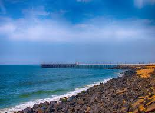
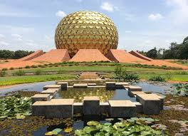
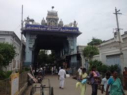
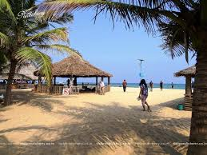
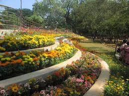

Promenade Beach
Popular beachfront promenade with a statue of Mahatma Gandhi.

Popular beachfront promenade with a statue of Mahatma Gandhi.
Memorial honoring French soldiers who died in World War I.
Colonial-era streets with French architecture, cafes, and boutiques.
Spiritual center founded by Sri Aurobindo and The Mother (Mirra Alfassa).

Golden spherical temple symbolizing unity and meditation.
Information center about Auroville's philosophy and community.

Hindu temple dedicated to Lord Ganesha.
Catholic church with Gothic architecture and stained glass windows.
Museum showcasing archaeological findings and French colonial artifacts.
Gallery featuring contemporary Indian art and exhibitions.

Remote beach accessible by boat, known for its crystal-clear waters.
Quiet beach popular for swimming and relaxation.

Garden with exotic plants, an aquarium, and a musical fountain.
Backwater boating and picnic spot near Paradise Beach.
Annual film festival showcasing international and Indian cinema.
French National Day celebrated with cultural events in Puducherry.
Enjoy French pastries, crepes, and coffee in quaint cafes.